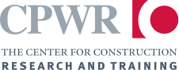

USM Proposal Development Grant Developing an AI-Supported Virtual Collaborative Environment for Spatial Learning and Collaborative Problem-Solving in Construction Engineering Period: 07/2026 - 07/2027 Sponsor: USM Proposal Development Grant Amount: $5,000 Role: Principal Investigator
 Temporary Wiring Hazards in Small Residential Construction: Assessing OSHA/NIOSH Guidance and Stakeholder Perspectives Period: 06/01/2026 - 06/01/2027 Sponsor: CPWR Small Study Program Amount: $29,765 Role: Principal Investigator